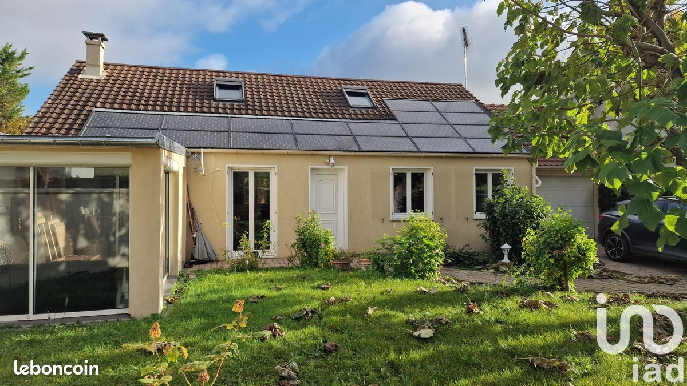
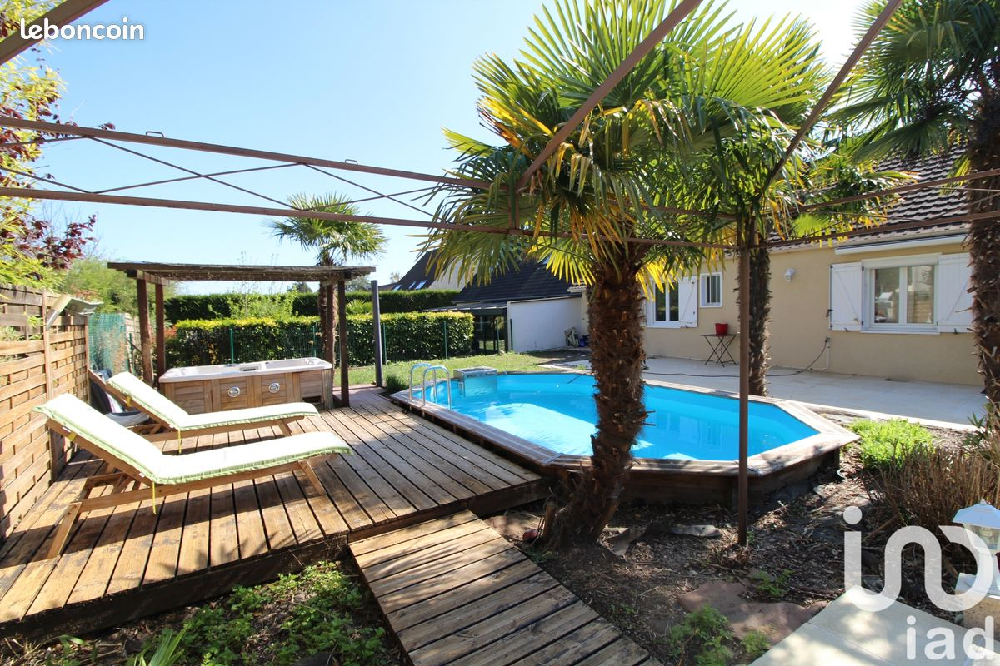
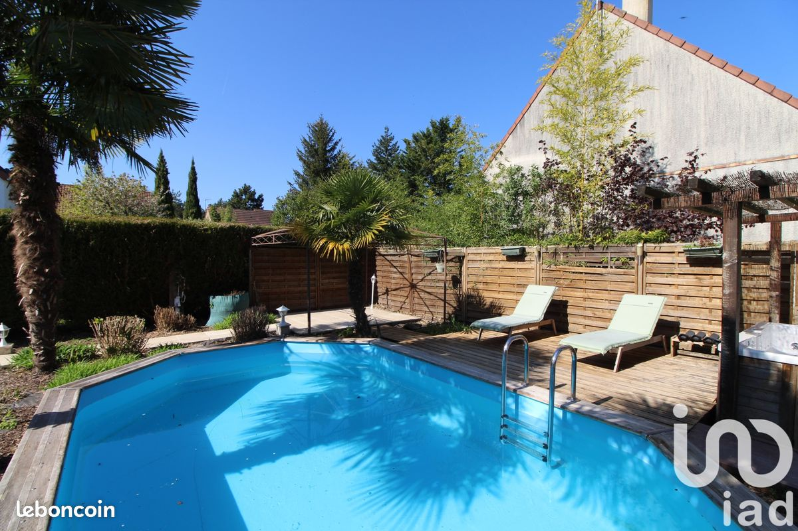
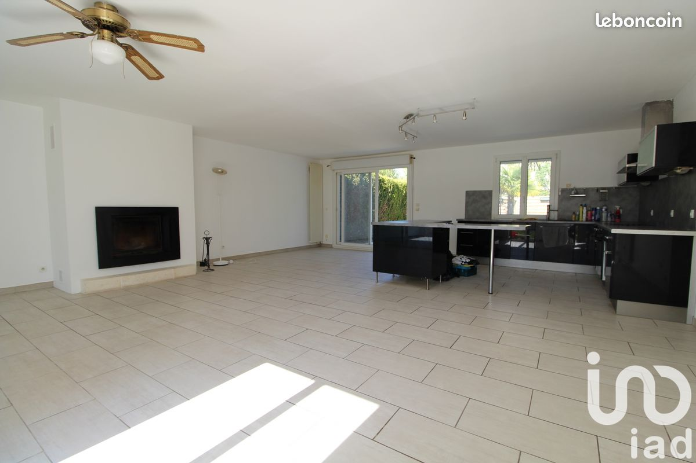
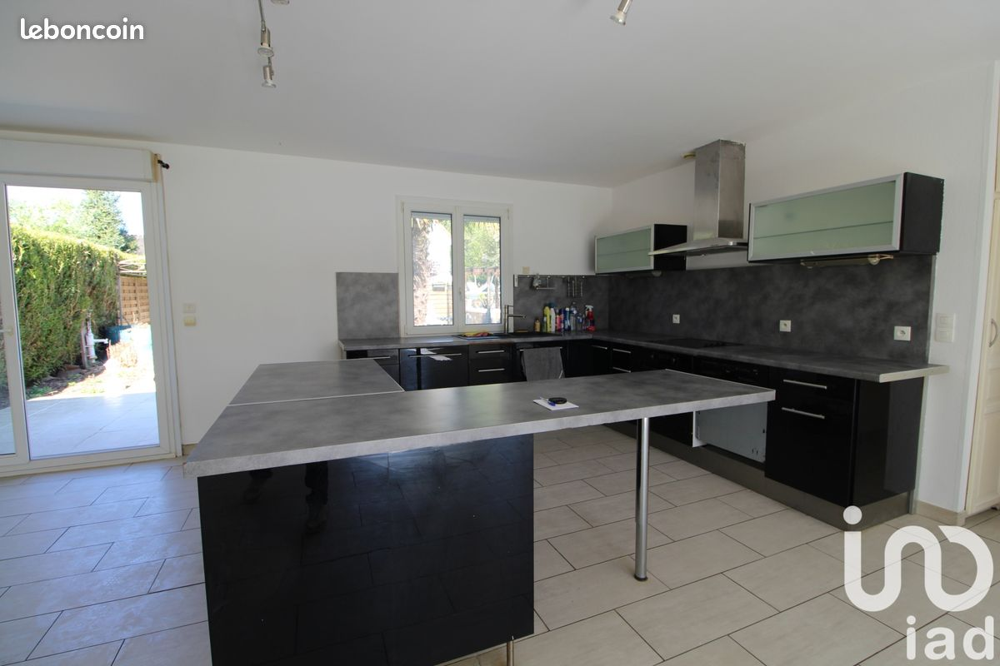
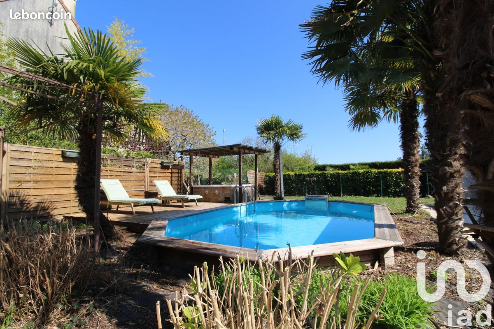
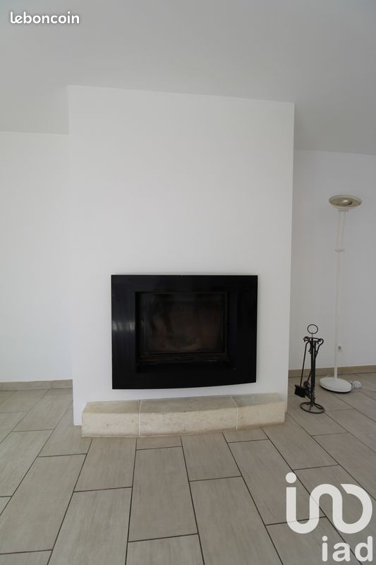
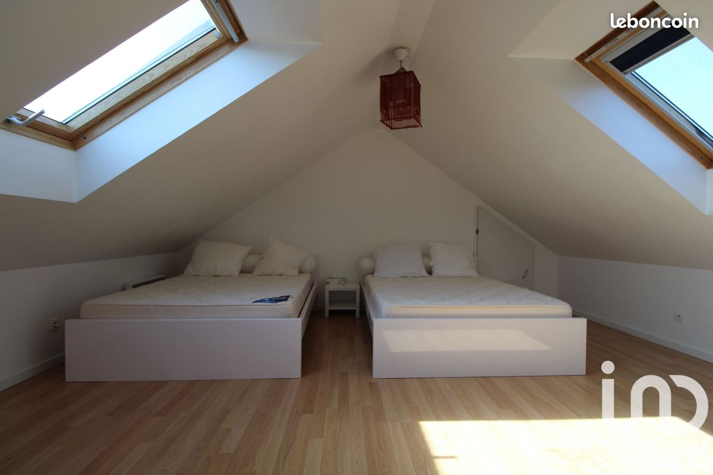
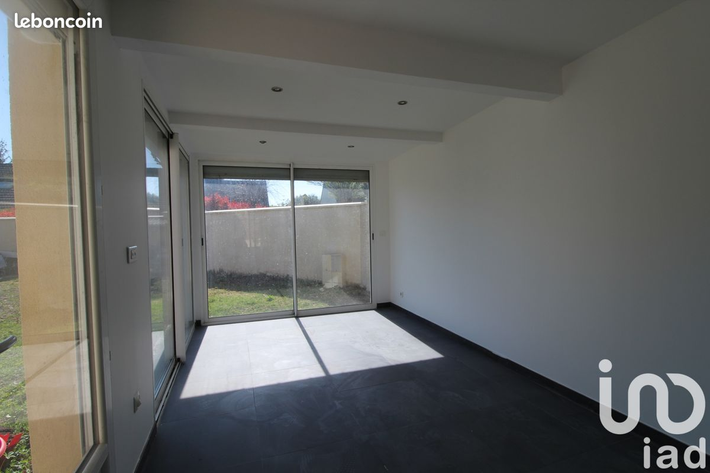
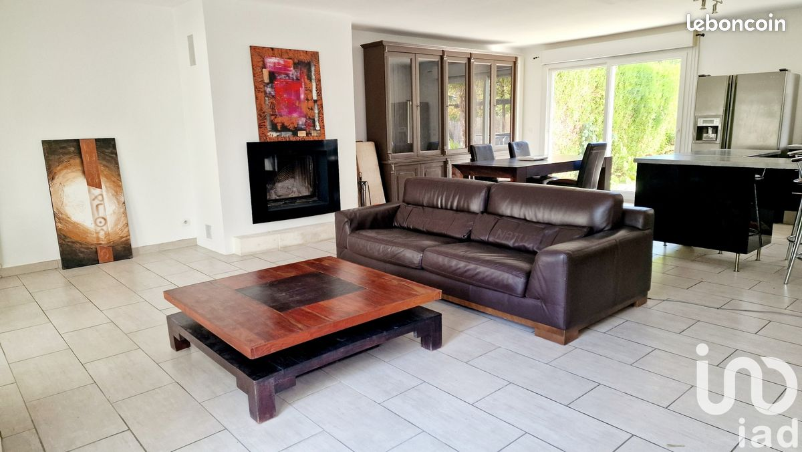
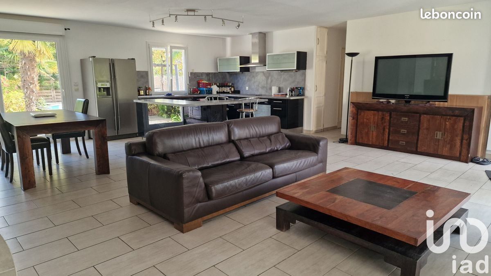
| Nombre de pièces 8 |
Nombre de chambres |
Surface habitable 130 m² |
Surface terrain 550.0 m² |
| Plain-pied nan |
Sous-sol nan |
Garage / stationnement nan |
Combles nan |
| Mitoyenneté nan |
Remarques (CSV) nan |
||
| Pièce | Niveau | Surface | Sol | Remarques / état |
|---|---|---|---|---|
| Entrée | _____ | _____ m² | ________ | _______________________________ |
| Salon / Séjour | _____ | _____ m² | ________ | Luminosité / bruit / vis-à-vis |
| Salle à manger | _____ | _____ m² | ________ | _______________________________ |
| Cuisine | _____ | _____ m² | ________ | Ouverte / fermée, état meubles & électroménager |
| Salle de bains 1 | _____ | _____ m² | ________ | Ventilation / VMC ? |
| Salle de bains 2 | _____ | _____ m² | ________ | _______________________________ |
| Chambre 1 | _____ | _____ m² | ________ | Bruit / orientation / rangements |
| Chambre 2 | _____ | _____ m² | ________ | Bruit / orientation / rangements |
| Chambre 3 | _____ | _____ m² | ________ | Bruit / orientation / rangements |
| Chambre 4 | _____ | _____ m² | ________ | Bruit / orientation / rangements |
| Bureau | _____ | _____ m² | ________ | _______________________________ |
| Véranda | _____ | _____ m² | ________ | Isolation / surchauffe été |
| Sous-sol | _____ | _____ m² | ________ | Hauteur sous plafond, humidité |
| Buanderie | _____ | _____ m² | ________ | Arrivées/évacuations eau |
| Garage | _____ | _____ m² | ________ | Largeur, hauteur, porte motorisée ? |
| Combles | _____ | _____ m² | ________ | Aménageables ? Isolation ? |
| Autre | _____ | _____ m² | ________ | _______________________________ |
| État général de la maison | |||
|---|---|---|---|
| Parfait ☐ | Bon ☐ | À rafraîchir ☐ | Gros travaux ☐ |
| Toiture | |||
| Parfait ☐ | Bon ☐ | À rénover ☐ | Infiltrations ? ________ |
| Humidité / sous-sol | |||
| Aucune trace ☐ | Léger ☐ | Important ☐ | Remarques : ____________________ |
| Électricité ________ €/an |
Gaz / fuel / PAC ________ €/an |
Eau ________ €/an |
Taxe foncière nan €/an |
| Coup de cœur ? Oui ☐ Non ☐ |
Effet waouh ? Oui ☐ Non ☐ |
On se projette ici ? Oui ☐ Non ☐ |
Note /10 : ________ |
| Points positifs : |
|||
| Points négatifs / doutes : |
|||
| Travaux à prévoir (ordre d’idée) : |
|||